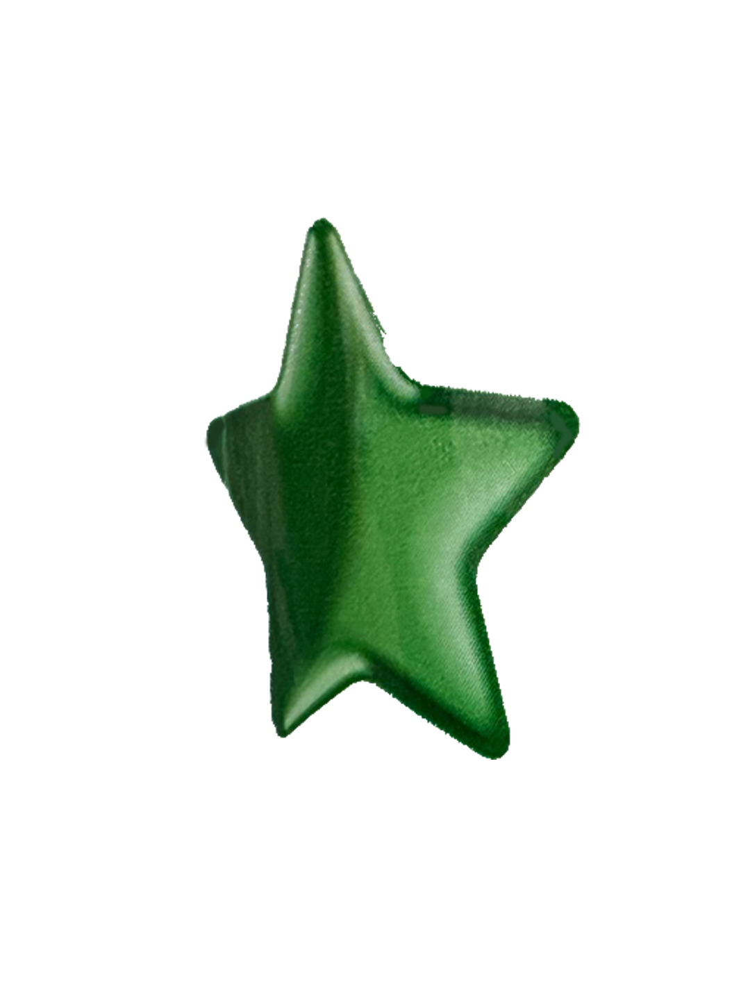
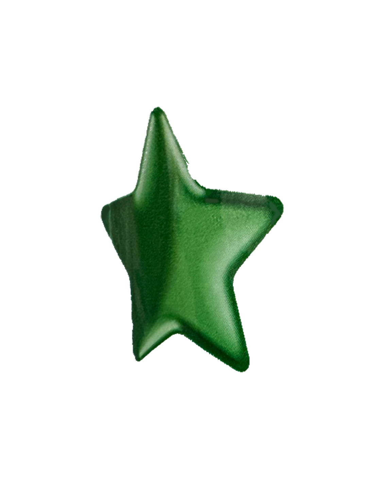

삼각형
형태

 

삼각형 하면 가장 먼저 떠오는 게 주의이다. 도로에서 흔히 볼 수 있는 표지판의 형태가 대부분 삼각형이다. 도로 위의 삼각형은 위험 및 경고 표지 군으로 도로상의 위험을 교통참여자에게 미리 알려 위험시에 능동적으로 예방하게 해준다.
또 삼각형 하면 나는 피자가 생각난다. 삼각형인 음식 중 가장 대표적이다. 피자를 본떠 만든 기업의 로고가 있다. 삼각형 형태만으로 대부분 이 음식이 피자라는 걸 알 수 있다. 삼각형을 조합해서 만들 수 있는 별이 있다. 별은 빛이 사방으로 퍼지는 모습을 상징적으로 나타낸 기호이다.